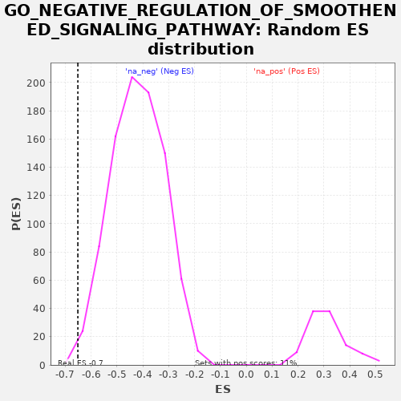

| | | Dataset | PRAD |
| Phenotype | NoPhenotypeAvailable |
| Upregulated in class | na_neg |
| GeneSet | GO_NEGATIVE_REGULATION_OF_SMOOTHENED_SIGNALING_PATHWAY |
| Enrichment Score (ES) | -0.6509183 |
| Normalized Enrichment Score (NES) | -1.5526388 |
| Nominal p-value | 0.006741573 |
| FDR q-value | 0.06871113 |
| FWER p-Value | 1.0 |
Table: GSEA Results Summary
 Fig 1: Enrichment plot: GO_NEGATIVE_REGULATION_OF_SMOOTHENED_SIGNALING_PATHWAY
Fig 1: Enrichment plot: GO_NEGATIVE_REGULATION_OF_SMOOTHENED_SIGNALING_PATHWAY
Profile of the Running ES Score & Positions of GeneSet Members on the Rank Ordered List
| PROBE | GENE SYMBOL | GENE_TITLE | RANK IN GENE LIST | RANK METRIC SCORE | RUNNING ES | CORE ENRICHMENT | | 1 | PRKACB | | | 3994 | 9.157 | -0.1269 | No |
| 2 | RB1 | | | 7253 | 1.701 | -0.2401 | No |
| 3 | CD3E | | | 7686 | 1.235 | -0.2534 | No |
| 4 | MEGF8 | | | 8971 | 0.339 | -0.2986 | No |
| 5 | SUFU | | | 9051 | 0.301 | -0.3009 | No |
| 6 | HHIP | | | 9100 | 0.278 | -0.3022 | No |
| 7 | KCTD21 | | | 10126 | -0.059 | -0.3386 | No |
| 8 | BTRC | | | 11631 | -1.193 | -0.3902 | No |
| 9 | ULK3 | | | 11763 | -1.328 | -0.3926 | No |
| 10 | GPC3 | | | 11938 | -1.532 | -0.3962 | No |
| 11 | MGRN1 | | | 12089 | -1.712 | -0.3987 | No |
| 12 | RFX4 | | | 12792 | -2.616 | -0.4193 | No |
| 13 | KCTD11 | | | 13530 | -3.708 | -0.4392 | No |
| 14 | TRAF3IP1 | | | 14248 | -5.017 | -0.4563 | No |
| 15 | PRKACA | | | 14341 | -5.212 | -0.4507 | No |
| 16 | PTCH1 | | | 15626 | -8.009 | -0.4829 | No |
| 17 | SALL3 | | | 19884 | -20.332 | -0.6002 | Yes |
| 18 | SERPINE2 | | | 20153 | -21.269 | -0.5736 | Yes |
| 19 | IFT122 | | | 22322 | -30.177 | -0.5997 | Yes |
| 20 | TULP3 | | | 23218 | -34.750 | -0.5726 | Yes |
| 21 | RUNX2 | | | 24667 | -43.558 | -0.5503 | Yes |
| 22 | GPR37L1 | | | 24841 | -44.824 | -0.4804 | Yes |
| 23 | KIF7 | | | 25013 | -46.054 | -0.4083 | Yes |
| 24 | GPR161 | | | 25356 | -48.747 | -0.3378 | Yes |
| 25 | GLI3 | | | 25979 | -54.235 | -0.2679 | Yes |
| 26 | PTCH2 | | | 26884 | -64.471 | -0.1907 | Yes |
| 27 | KCTD6 | | | 27062 | -67.112 | -0.0831 | Yes |
| 28 | GLIS2 | | | 27260 | -70.264 | 0.0291 | Yes |
Table: GSEA details [plain text format]

Fig 2: GO_NEGATIVE_REGULATION_OF_SMOOTHENED_SIGNALING_PATHWAY: Random ES distribution
Gene set null distribution of ES for GO_NEGATIVE_REGULATION_OF_SMOOTHENED_SIGNALING_PATHWAY